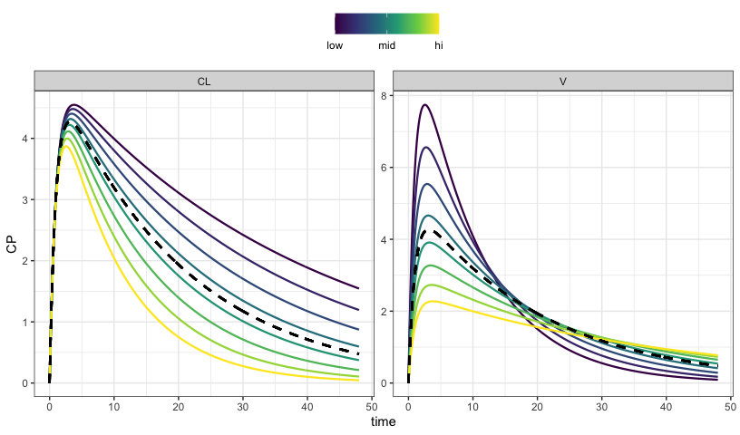
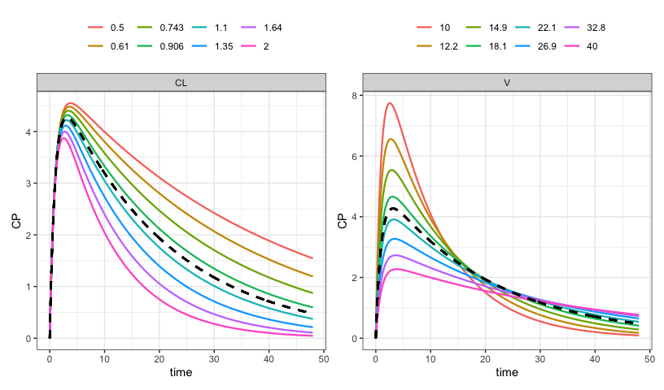
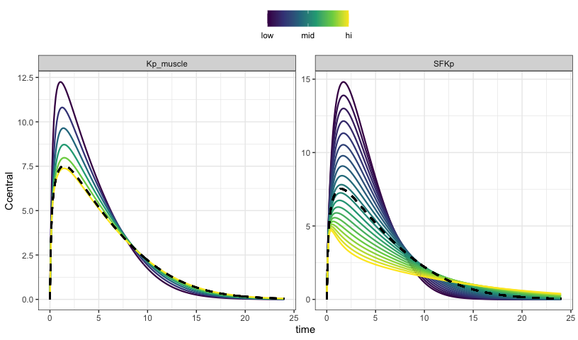
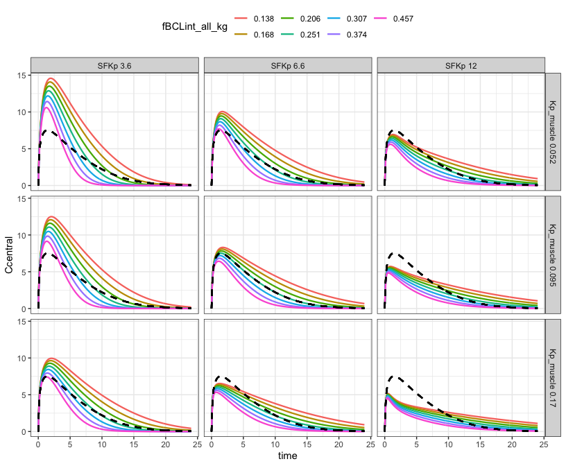

A simple, clean workflow for sensitivity analysis with mrgsolve.
mod <- mread("pk1", modlib(), end = 48, delta = 0.1). Building pk1 ... done.
param(mod).
. Model parameters (N=3):
. name value . name value
. CL 1 | V 20
. KA 1 | . .PK model sensitivity analysis by factor
The nominal (in model) parameter value is divided and multiplied by a factor, generating minimum and maximum bounds for simulating a sequence of parameter values
out <-
mod %>%
ev(amt = 100) %>%
select_par(CL, V) %>%
parseq_fct(.n=8) %>%
sens_each()
sens_plot(out, "CP")
The simulated data is returned in a long format
out. # A tibble: 23,232 x 7
. case time p_name p_value dv_name dv_value ref_value
. * <int> <dbl> <chr> <dbl> <chr> <dbl> <dbl>
. 1 1 0 CL 0.5 EV 0 0
. 2 1 0 CL 0.5 EV 0 100
. 3 1 0 CL 0.5 CENT 0 0
. 4 1 0 CL 0.5 CENT 0 0
. 5 1 0 CL 0.5 CP 0 0
. # … with 23,227 more rowsAnd you can plot with more informative color scale and legend
sens_plot(out, "CP", grid = TRUE)
Sensitivity analysis on custom sequences
The model is rifampicin PBPK.
mod <- mread("inst/example/rifampicin.cpp") %>% update(delta = 0.1). Building rifampicin_cpp ... done.
mod %>%
ev(amt = 600) %>%
parseq_manual(
SFKp = seq_fct(.$SFKp, n = 20),
Kp_muscle = seq_even(0.001, 0.1, n = 6)
) %>%
sens_each() %>%
sens_plot("Ccentral")
Simulate a grid
To this point, we have always used sens_each so that each value for each parameter is simulated one at a time. Now, simulate the grid or all combinations.
We use parseq_cv here, which generates lower and upper bounds for the range using 50% coefficient of variation.
out <-
mod %>%
update(outvars = "Ccentral") %>%
ev(amt = 600) %>%
parseq_cv(fBCLint_all_kg, .n = 7) %>%
parseq_cv(SFKp, Kp_muscle, .n = 3) %>%
sens_grid(recsort = 3)
out. # A tibble: 15,372 x 8
. case fBCLint_all_kg SFKp Kp_muscle time dv_name dv_value ref_value
. * <int> <dbl> <dbl> <dbl> <dbl> <chr> <dbl> <dbl>
. 1 1 0.138 3.65 0.0520 0 Ccentral 0 0
. 2 1 0.138 3.65 0.0520 0 Ccentral 0 0
. 3 1 0.138 3.65 0.0520 0 Ccentral 0 0
. 4 1 0.138 3.65 0.0520 0 Ccentral 0 0
. 5 1 0.138 3.65 0.0520 0.1 Ccentral 3.66 3.14
. # … with 15,367 more rows
out %>% sens_plot("Ccentral")
Local sensitivity analysis
mod <- modlib("pk2", delta = 0.1, end = 72). Building pk2 ... done.
doses <- ev(amt = 100)
out <- lsa(mod, var = "CP", par = "CL,V2,Q", events = doses)
out. # A tibble: 2,166 x 5
. time dv_name dv_value p_name sens
. * <dbl> <chr> <dbl> <chr> <dbl>
. 1 0 CP 0 CL 0
. 2 0 CP 0 CL 0
. 3 0.1 CP 0.472 CL -0.00254
. 4 0.2 CP 0.893 CL -0.00514
. 5 0.3 CP 1.27 CL -0.00782
. # … with 2,161 more rows
lsa_plot(out, pal = NULL)